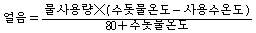
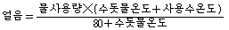
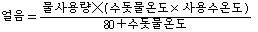
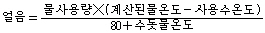
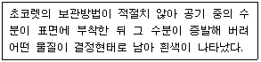

제빵기능사 (2009-03-29 기출문제)
1과목: 제조이론
1. 오븐의 생산능력은 무엇으로 계산하는가?
- 소모되는 전력량
- 오븐의 높이
- 오븐의 단열 정도
- 오븐 내 매입 철판 수
(정답률: 78%)

2. 밤과자 제조공정에 대한 설명으로 틀린 것은?
- 반죽을 한 덩어리로 만들어 즉시 분할한다.
- 반죽과 내용물의 되기를 동일하게 한다.
- 성형 후 물을 뿌려 덧가루를 제거한다.
- 껍질의 두께가 일정하도록 내용물을 싼다.
(정답률: 56%)
3. 반죽형 케이크의 반죽 믹싱법에 대한 설명으로 틀린 것은?
- 크림법은 유지, 설탕, 계란으로 크림을 만든다.
- 블랜딩법은 유지와 밀가루를 먼저 혼합한다.
- 단단계법은 모든 재료를 한 번에 넣고 혼합한다.
- 설탕물법은 설탕 1을 물 2의 비율로 용해하여 액당을 만든다.
(정답률: 59%)
4. 도넛의 발한 현상을 방지하는 방법으로 틀린 것은?
- 튀김시간을 늘인다.
- 점착력이 낮은 기름을 사용한다.
- 충분히 식히고 나서 설탕을 묻힌다.
- 도넛 위에 뿌리는 설탕 사용량을 늘인다.
(정답률: 59%)
5. 다음 제품 중 건조방기를 목적으로 나무틀을 사용하여 굽기를 하는 제품은?
- 슈
- 밀푀유
- 카스테라
- 퍼프 페이스트리
(정답률: 77%)
6. 케이크의 부피가 작아지는 원인에 해당하는 것은?
- 강력분을 사용한 경우
- 오버베이킹된 경우
- 크림성이 좋은 유지를 사용한 경우
- 신선한 달걀을 사용한 경우
(정답률: 55%)
7. 가나슈 크림에 대한 설명으로 옮은 것은?
- 생크림은 절대 끓여서 사용하지 않는다.
- 초콜릿과 생크림의 배합비율은 10:1이 원칙이다.
- 초콜릿 종류는 달라도 카카오 성분은 같다.
- 끓인 생크림에 초콜릿을 더한 크림이다.
(정답률: 75%)
8. 퍼프페이스트리 굽기 후결점과 원인으로 틀린 것은?
- 수축 : 밀어펴기 과다, 너무 높은 오븐 온도
- 수포 생성 : 단백질 함량이 높은 밀가루로 반죽을 함
- 충전물 흘러 나옴 : 충전물량 과다 , 봉합 부적절
- 작은 부피 : 수분이 없는 경화 쇼트닝을 충전용 유지로 사용
(정답률: 60%)
9. 비중과 관련이 없는 것은？
- 완제품의 조직
- 기공의 크기
- 완제품의 크기
- 팬 용적
(정답률: 75%)
10. 머랭 (meringue)을 제조할 때 주석산 크림의 사용 목적이 아닌 것은?
- 흰자를 강하게 한다.
- 머랭의 ph를 낮춘다
- 맛을 좋게한다.
- 색을 희게 한다.
(정답률: 61%)
11. 다음 중 익히는 방법이 나머지 셋과 다른 것은?
- 찐빵
- 엔젤푸드 케이크
- 스펀지 케이크
- 파운드 케이크
(정답률: 87%)
12. 데블스푸드 케이크 제조시 중조를 8g 사용했을 경우 가스 발생량으로 비교했을 때 베이킹파우더 몇 g과 효과가 같은가?
- 8 g
- 16g
- 24g
- 32g
(정답률: 57%)
13. 파운드케이크를 구운 직후 계란 노른자에 설탕을 넣어 칠할 때 설탕의 역할이 아닌 것은?
- 광택제 효과
- 보존기간 개선
- 탈색 효과
- 맛의 개선
(정답률: 71%)
14. 젤리 롤 케이크는 말 때 터지는 경우의 조치 사항이 아닌 것은?
- 계란에 노른자를 추가시켜 사용한다.
- 설탕(자당)의 일부를 물엿으로 대처한다.
- 덱스트린의 점착성을 이용한다.
- 팽창이 과도한 경우에는 팽창제 사용량을 감소시킨다.
(정답률: 65%)
15. 다음 중 반죽의 얼음사용량 계산공식으로 옳은 것은?




(정답률: 71%)
16. 성형과정을 거치는 동안에 반죽이 거친 취급을 받아 상처받은 상태이므로 이를 회복시키기 위해 글루텐숙성과 팽창을 도모하는 과정은?
- 1차 발효
- 중간 발효
- 펀치
- 2차 발효
(정답률: 62%)
17. 일반적으로 작은 규모의 제과점에서 사용하는 믹서는?
- 수직형 믹서
- 수평형 믹서
- 초고속 믹서
- 커터 믹서
(정답률: 81%)
18. 식빵배합률 합계가 180%, 밀가루 총 사용량이 3000g일 때 총반죽의 무게는? (단. 기타손실은 없음)
- 1620g
- 3780g
- 5400g
- 5800g
(정답률: 61%)
19. 빵의 굽기에 대한 설명 중 옳은 것은?
- 고배합의 경우 낮은 온도에서 짧은 시간으로 굽기
- 고배합의 경우 높은 온도에서 긴 시간으로 굽기
- 저배합의 경우 낮은 온도에서 긴 시간으로 굽기
- 저배합의 경우 높은 온도에서 짧은 시간으로 굽기
(정답률: 67%)
20. 반죽을 발효시키는 목적이 아닌 것은?
- 향 생성
- 반죽의 숙성 작용
- 반죽의 팽창작용
- 글루텐 응고
(정답률: 68%)
2과목: 재료과학
21. 과자빵의 껍질에 흰 반점이 생긴 경우 그 원인에 해당되지 않는 것은?
- 반죽온도가 높았다.
- 발효하는 동안 반죽이 식었다.
- 숙성이 덜 된 반죽을 그대로 정형하였다.
- 2차 발효 후 찬 공기를 오래 쐬었다.
(정답률: 60%)
22. 생산관리의 기능과 거리가 먼 것은?
- 품질보증기간
- 적시ㆍ적량기능
- 원가조절기능
- 글루텐 응고
(정답률: 77%)
23. 다음 중 주로 유화제로 사용되는 식품첨가물은?
- 글리세린지방산에스테르
- 탄산암모늄
- 프로피온산칼슘
- 탄산나트륨
(정답률: 61%)
24. 제빵 냉각법 중 적합하지 않은 것은?
- 급속냉각
- 자연냉각
- 터널식냉각
- 에어콘디션식 냉각
(정답률: 64%)
25. 다음 중 제품 특성상 일반적으로 노화가 가장 빠른 것은?
- 단과자빵
- 카스테라
- 식빵
- 도넛
(정답률: 67%)
26. 빵의 팬닝(팬넣기)에 있어 팬의 온도로 가장 적합한 것은?
- 냉장온도(0~5℃)
- 20~24℃
- 30~35℃
- 60℃ 이상
(정답률: 78%)
27. 제빵시 유지를 투입하는 반죽의 단계는?
- 픽업단계
- 클린업단계
- 발전단계
- 최종단계
(정답률: 73%)
28. 식빵 제조시 결과 온도 33℃, 밀가루온도 23℃, 실내온도 26℃, 수돗물온도 22℃,희망온도 27℃,사용물량 5kg일 때 마찰계수는?
- 19
- 22
- 24
- 28
(정답률: 46%)
29. 반죽을 팬에 넣기 전에 팬에서 제품이 잘 떨어지게 하기 위하여 이형유를 사용하는데 그 설명으로 틀린 것은?
- 이형유는 발연점이 높은 것을 사용해야 한다.
- 이형유는 고온이나 산패에 안정해야 한다.
- 이형유의 사용량은 반죽 무게의 5%정도이다.
- 이형유의 사용량이 많으면 튀김현상이 나타난다.
(정답률: 71%)
30. 다음 중 일반적인 산형 식빵의 비용적은(cc/g)은?
- 1.0 ~ 1.3
- 1.4 ~ 1.7
- 2.3 ~ 2.7
- 3.2 ~ 3.4
(정답률: 67%)
3과목: 영양학
31. 이스트푸드의 구성 성분이 아닌 것은?
- 암모늄염
- 질산염
- 칼슘염
- 전분
(정답률: 38%)
32. 다음과 같은 조건에서 나타나는 현상과 그와 관련한 물질을 바르게 연결한 것은?

- 팻브룸(fat bloom) - 카카오매스
- 팻브룸(fat bloom) - 글리세린
- 슈가브룸(sugar bloom) - 카카오버터
- 슈가브룸(sugar bloom) - 설탕
(정답률: 74%)
33. 마요네즈를 만드는데 노른자가 500g 필요하다. 껍질 포함 60g짜리 계란을 몇 개 준비해야 하는가?
- 10개
- 14개
- 28개
- 56개
(정답률: 61%)
34. 패리노그래프(Farinograph)위 기능 및 특징이 아닌 것은?
- 흡수율 측정
- 믹싱 시간 측정
- 500 B.U.를 중심으로 그래프 작성
- 전분 호화력 측정
(정답률: 66%)
35. 물과 반죽의 관계에 대한 설명 중 옳은 것은?
- 경수로 배합할 경우 발효 속도가 빠르다.
- 연수로 배합할 경우 글루텐을 더욱 단단하게 한다.
- 연수 배합시이스트푸드를 약간 늘이는 게 좋다
- 경수로 배합을 하면 글루텐이 부드럽게 되고 기계에 잘 붙는 반죽이 된다.
(정답률: 54%)
36. 다음 중 반죽에 산화제를 사용하였을 때의 결과에 대한 설명으로 잘못된 것은?
- 반죽강도가 증가된다.
- 가스 포집력이 증가한다.
- 기계성이 개선된다.
- 믹싱시간이 짧아진다.
(정답률: 41%)
37. 가장 광범위하게 사용되는 베이킹파우더(baking powder)의 주성분은?
- CaHpO4
- NaHCO3
- Na2CO3
- NH4CI
(정답률: 61%)
38. 다음 중 제빵에 맥아를 사용하는 목적이 아닌 것은?
- 이산화탄소 생산을 증가시킨다.
- 제품에 독특한 향미를 부여한다.
- 노화지연 효과가 있다.
- 구조형성에 도움을 준다.
(정답률: 41%)
39. 마가린에 대한 설명 중 틀린 것은?
- 지방함량이 80% 이상이다.
- 유지원료는 동물성과 식물성이 있다.
- 버터 대용품으로 사용된다.
- 순수 유지방(乳脂肪)만을 사용했다.
(정답률: 74%)
40. 지방에 대한 설명 중 잘못된 것은?
- 지방은 글리세린과 지방산으로 되어 있다.
- 지방 중 유리지방산 함량이 많으면 발연점이 높아진다.
- 불포화지방산은 식물성유에 많다.
- 지방산에 이중결합의 수가 많으면 융점이 낮아진다.
(정답률: 45%)
41. 제빵용 밀가루에서 빵 발효에 많은 영향을 주는 손상전분의 적정한 함량은?
- 0%
- 1 ~ 3.5%
- 4.5 ~ 8%
- 9~ 12.5%
(정답률: 60%)
42. 제과제빵에 사용하는 분유의 기능이 아닌 것은?
- 갈변 방지
- 영양소 공급
- 글루텐 강화
- 맛과 향 개선
(정답률: 53%)
43. 맥아당은 이스트의 발효과정 중에 효소에 의해 어떻게 분해되는가?
- 포도당 + 포도당
- 포도당 + 과당
- 포도당 + 유당
- 과당 + 과당
(정답률: 67%)
44. 효소를 구성하는 주성분에 대한 설명으로 틀린 것은?
- 탄소, 수소, 산소, 질소 등의 원소로 구성되어 있다.
- 아미노산이 펩티드 결합을 하고 있는 구조이다.
- 열에 안정하여 가열하여도 변성되지 않는다.
- 섭취 시 4Kcal의 열량을 낸다.
(정답률: 59%)
45. 정상 조건하의 베이킹파우더 100g에서 얼마 이상의 유효이산화탄소 가스가 발생되어야 하는가?
- 6%
- 12%
- 18%
- 24%
(정답률: 50%)
46. 콜레스테롤 흡수와 가장 관계 깊은 것은?
- 타액
- 위액
- 담즙
- 장액
(정답률: 64%)
47. 다음 중 단당류가 아닌 것은?
- 갈락토오즈
- 포도당
- 과당
- 맥아당
(정답률: 65%)
48. 성인의 1일 단백질 섭취량이 체중 kg당 1.13g일 때 66kg의 성인이 섭취하는 단백질의 열량은?
- 74.6kcal
- 298.3kcal
- 671.2kcal
- 264kcal
(정답률: 59%)
49. 지방의 주요 기능이 아닌 것은?
- 비타민 A, D, E, K의 운반, 흡수작용
- 체온의 손실방지
- 티아민(thiamine)의 절약작용
- 정상적인 삼투압 조절에 관여
(정답률: 57%)
50. 식품을 태웠을 때 재로 남는 성분은?
- 유기질
- 무기질
- 단백질
- 비타민
(정답률: 68%)
4과목: 식품위생학
51. 식품의 부패를 판정할 때 화학적 판정 방법이 아닌 것은?
- TMA 측정
- ATP 측정
- LD50 측정
- VBN 측정
(정답률: 61%)
52. 다음 중 제 1급 법정 전염병은?
- 결핵
- 디프테리아
- 장티푸스
- 말라리아
(정답률: 64%)
53. 과자류, 빵류를 제조할 때 가스를 발생시켜 연하고 맛이 좋고 소화되기 쉬운 상태로 만들 목적으로 사용하는 식품첨가물은?(문제에 오류가 있어서 여기서는 4번을 정답 처리 합니다.)
- 식품첨가물
- 식품
- 화학적 합성품
- 기구
(정답률: 64%)
54. 식품을 제조, 가공 또는 보존시 식품에 첨가, 혼합, 침윤 기다의 방법으로 사용되는 물질은?
- 식품첨가물
- 식품
- 화학적 합성품
- 기구
(정답률: 73%)
55. 살모넬라균으로 인한 식중독의 잠복기와 증상으로 옳은 것은?
- 오염식품 섭취 10~24시간 후 발열(38~40℃)이 나타나며 1주 이내 회복이 된다.
- 오염식품 섭취 10~20시간 후 오한과 혈액이 섞인 설사가 나타나며 이질로 의심되기도 한다.
- 오염식품 섭취 10~30시간 후 점액성 대변을 배설하고 신경증상을 보여 곧 사망한다.
- 오염식품 섭취 8~20시간 후 복통이 있고 홀씨 A, F형의 독소에 의한 발병이 특징이다.
(정답률: 61%)
56. 포도상구균이 생산하는 독소는?
- 솔라닌
- 테트로도톡신
- 엔테로톡신
- 뉴로톡신
(정답률: 65%)
57. 다음 중 병원체가 바이러스인 질병은?
- 폴리오
- 결핵
- 디프테리아
- 성홍열
(정답률: 48%)
58. 쥐나 곤충류에 의해서 발생될 수 있는 식중독은?
- 살모넬라 식중독
- 클로스트리디움 보톨리늄 식중독
- 포도상구균 식중독
- 장염비브리오 식중독
(정답률: 66%)
59. 식자재의 교차오염을 예방하기 위한 보관방법으로 잘못된 것은?
- 원재료와 완성품 구분하여 보관
- 바닥과 벽으로부터 일정거리를 띄워 보관
- 뚜껑이 있는 청결한 용기에 덮개를 덮어서 보관
- 식자재와 비식자재를 함께 식품창고에 보관
(정답률: 78%)
60. 클로스트리디움 보톨리늄 식중독과 관련 있는 것은?
- 화농성 질환의 대표균
- 저온살균 처리로 예방
- 내열성 포자 형성
- 감염형 식중독
(정답률: 53%)